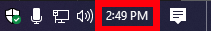
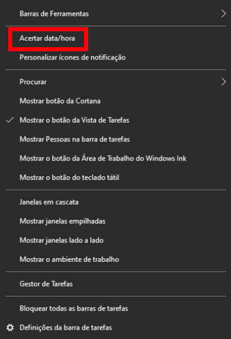

Não consigo aceder a Internet.
Verificar se esta conectado a rede.
Com o computador ligado verificar no canto inferior direito do ecrã na barra tarefas se tem o simbolo indicativo que esta realmente conectado.
Atualizar a data.
Umas das possiveis causas de não conseguir aceder a websites podera estar relacionada com a data desatualizada.
Para resolver isto é necessario clicar com o botão direito no relogio no canto inferior direito do ecrã e selecionar a opção "Acertar data/hora". Neste menu que lhe irá aparecer pode permitir que esta seja atualizada pela rede ou manualmente ajusta-la.
Atualizar os drivers.
Em caso de o computador ter sido recentemete formatado é possivel que o sistema não reconheca a sua placa de rede. Para resolver este problema necessita de aceder ao website do fabricante da sua placa de rede ou placa mãe se for utilizar a placa integrada.
O PC não dá vídeo.
Verificar os cabos.
Verifique que os cabos de alimentação do computador e do monitor estão bem conectados nas duas pontas. Verifique tambem conectar a diferentes tomadas para confirmar que a que esta a usar atualmente não será o problema.
Verificar se o monitor esta a funcionar.
Para verificar se o seu monitor esta a funcionar pode conectar o computador a um outro dispositivo como uma televisão ou conectar outro computador ao monitor.

Verificar se a placa de vídeo esta conectada corretamente.
Com o computador desligado e desconectado abrir a tampa lateral e retirar a placa grafica e repô-la no mesmo local conectando todos os conectores de energia.
O PC esta lento.
Verificar a existência de vírus.
Poderá acontecer que o seu computador tenha virus sem voce saber. Para verificar isso selecione uma analise por virus no seu antivirus. No caso de não possuir um antivirus necessita de transferir um.
Desativar/desinstalar programas.
Na inicialização do seu sistema poderá ter varios programas a prejudicar a performance do seu computador. para resolver isso remova todos os programas que não necessita ou desative os que não usa regularmente.
Fazer uma limpeza ao disco.
Para realizar uma limpeza de disco ira abrir o seu explorador de ficheiros na aba "Este PC" e selecionar com o botão direito no disco que pretende limpar espaço a opção "Propriedades", selecionando seguidamente a opção "Limpeza de Disco". Poderá tambem utilizar programas externos para realizar uma limpeza mais profunda.
Desfragmentar o disco.
Para realizar uma desfragmentação de disco ira abrir o seu explorador de ficheiros na aba "Este PC" e selecionar com o botão direito no disco que pertende desfragmentar a opção "Propriedades", selecionando seguidamente a aba Ferramentas e a opção "Optimizar e Desfragemntar o Disco".
Formatar o computador.
Para formatar o seu computador abra as definições e selecione a opção "Atualizações e segurança" e na aba "recuperação" selecione "Repor este PC" e siga os passos.
Limpar o computador.
Se se sentir confortavel poderá abrir a tampa lateral do computador e realizar uma limpeza ao computador. É recomendado fazer esta com um pinçel para não danificar nada.